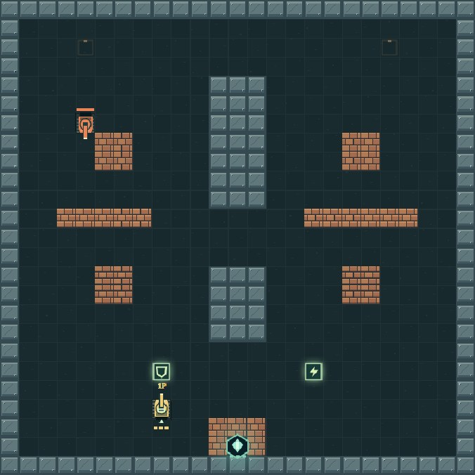
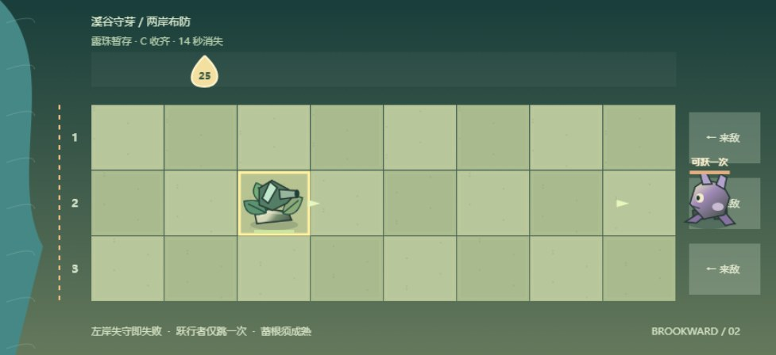
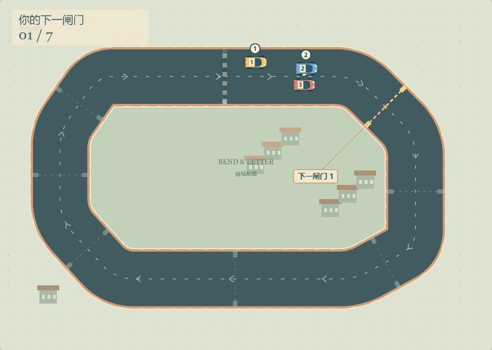

v2 实玩画面 · 非原作截图堡垒防线
一座信标，两条火线。
击碎砖墙，绕开水域，守住身后的共享基地。可单人，也可选择同键双人。
WASD 移动J 开火P 暂停
第一件事：守住底部信标，清除首图6名来敌。
试玩堡垒防线 可选 v4 · 三图回防战役OUR GAMES / 本项目原创游戏
45 款目录入口，当前版本与开发状态都标清。
作品仍是原创玩法原型；候选、暂停与已验证范围分别说明。
八役已上线试玩 · 线上体验验收中
原创回合策略实验：让谷卫与驿骑守住传信线，在山隘、浅渡和烽台之间分配有限命令与军粮。首五役保留，新增粮道易手、换防时序与守点撤回，共八役试玩；不计入45款登记作品。新役真人与实体手机体验待验。
到完整入口索引查看试玩 →七室首段已上线 · 六室续段已上线试玩
七室首段保留上线试玩；六室续段新增枪弹、治疗与留空位的出门决策，独立存档，线上体验验收中。
两段均不计入45款登记作品；真实手机体验仍待验。
CHOOSE & PLAY / 直接试玩
主按钮直接进入对应游戏。
有 v2 的条目保留 v1 入口；品质状态不等于上线状态。
START WITH THREE / 精选试玩
基地防守、分路布防、俯视竞速。
均为本项目原创玩法候选，仍待真人品质验收。

v2 实玩画面 · 非原作截图一座信标，两条火线。
击碎砖墙，绕开水域，守住身后的共享基地。可单人，也可选择同键双人。
第一件事：守住底部信标，清除首图6名来敌。
试玩堡垒防线 可选 v4 · 三图回防战役
v2 实玩画面 · 非原作截图听哪一行的风，守哪一行。
看准来敌路线，用有限露珠安排不同守护装置。装置只照顾本行，组合比盲目铺满更重要。
第一件事：看开场预告，选对应行和格，再部署一座晶枝弩。
试玩溪谷守芽 可选 v3 · 三溪短战役
v2 实玩画面 · 非原作截图先看弯心，再踩油门。
黄色1号是你。与两名对手在同一街区争位，沿亮起的闸门跑完两圈；第一名才算获胜。
第一件事：先通过亮起的下一闸门，入弯前试着松油或刹车。
试玩弯道邮差 可选 v4 · 三站回环杯单赛道、三场对手组合；B复位会停驶3秒。没有配送系统。刷新后先暂停续赛。
原目录绑定极品飞车系列，当前实作仅参考街机竞速类型，未锁定具体作品；无改装、追逐或开放路网。
查看版本对照与记录OPENED HERE / 本机最近入口
只记打开过的入口，不读取游戏存档；同一款保留最近的版本。
正在载入45款试玩入口…
没有匹配的游戏。换个名字或编号试试，或。
游戏及推荐版本资料暂时无法完整读取，暂不显示可能过期的入口。请检查网络后；也可查看冻结原首页 v1 档案。
THE COLLECTION / 图鉴目录
按名称、主题和玩法筛选。
原作参考图标注版本与出处；未补图会明确说明。
正在核对图片来源与版本。
原作图片仅用于历史介绍与评论比较，来源核实不代表取得转载授权。This website is not endorsed by or affiliated with EA or its licensors.
试试英文名、常见别名，或减少筛选条件。
请检查网络后重新加载。如果正在本地打开，请使用静态 HTTP 服务访问。
OUR PROTOTYPES / 本项目原创原型
39 个已发布原创入口 · 413 关首版配置。
另有 6 个独立候选，尚未正式验收。
已有完整 v1 继续保留。街巷护送 / 战术篇 v2 有限候选，未完成品质验收（查看分版实玩、真实战斗图与差异）；云岛工坊 / 同一座城 v2 有限候选，未完成品质验收（查看两桥三章实测与真实城市整页图）；街角商旅 / 街市双商 v2 有限候选，未完成品质验收（查看分版实测、取整修补与真实整页图）；遗迹灯火 / 归火石室 v2 有限候选，未完成品质验收（查看三关有限实玩与需滚动的整页图）；四季小田 v2 有限候选，未完成品质验收（查看三章有限实测与真实农场图）；云港调度 v2 有限候选，未完成品质验收（查看三关有限实测与真实截图）；纸翼投递 / 纸翼工坊 v2 有限候选，未完成品质验收（查看本轮前后实图与有限实测）；弯道邮差 v2 有限候选，未完成品质验收（查看竞速差异与一场有限实测）；风行小径 v2 有限候选，未完成品质验收（查看差异与首关局部实测）；回声走廊 v2 有限候选，未完成品质验收（查看差异与首关有限实测）；风庭对决 v2 有限候选，未完成品质验收（查看攻防差异与分次有限实测）；光轨砖阵 v2 布局修复候选，未完成品质验收（查看布局范围与有限实测）；苔原远征 v2 有限候选，未完成品质验收（查看差异与分次实测记录）；灯塔小队 v2 有限候选，未完成品质验收（查看差异与宽屏航程实玩记录）；星羽同伴 v2 有限候选，未完成品质验收（查看差异与宽屏实玩记录）；晴湾篮场 v2 阶段暂停，未完成品质验收（查看阶段差异）；雨街修理所 v2 本轮停止追加优化，未完成品质验收（查看阶段差异）；潮原纪事 v2 可玩原型，视觉质感未达用户要求（查看实现与边界）；云岬游乐园 v2 本轮交付候选，未完成整体品质验收（查看改高与游客反馈差异）；林野杯赛 v2 本轮交付候选，未完成整体品质验收（查看读弯与辅助差异）；草甸联赛 v2 首轮候选，未完成品质验收（查看传接与射门差异）。37与40旧项目未完成，无完整可玩v1。v2 与后续版本以游戏大厅及完整网页入口索引为准，旧版与当时记录继续保留。查看冻结原首页与当时的完整 v1
新作 45 · 梯港拾星已加入：首篇三座原创梯港，另有独立进阶篇 · 借隙回港：三张新的分室与回环关卡。当前目录41款活动作品、3款停止项、1款保留项；原44项与所有旧版保留。参考Lode Runner式机制，非官方复刻，原72条图鉴不增加。真人品质仍待验收。
每款可查看参考原作、流行证据与设计解释、实现范围和预期感受。这里展示本项目的原创实现。封面和实测截图均不代表原作画面；“已有入口”不代表成品质量、全部关卡实玩或美术验收。
A NOTE FROM THE ATLAS
这是一份跨平台、跨年代的代表作品图鉴，不是销量榜、评分榜或严格的历史排名。十个分组是阅读主题，混合时代、场景与类型，不是游戏平台分类。卡片另列代表平台与玩法类型。
“系列”“作品”“作品版本”与“玩法谱系”分别标注。系列介绍概括共同体验，不代表每代都有相同规则；重制版、合集与后继品牌只作为注明范围的资料入口。
优先引用开发商、发行商、官方商店和博物馆；详情显示来源关系与核读状态。页面可读不等于所有事实都已验证。
原作参考图仅用于说明与比较，单独标注作品版本、来源及权利人。公开可访问不等于取得转载授权。原创原型的图像与原作画面分开展示；本站不提供 ROM 或原作资源包。